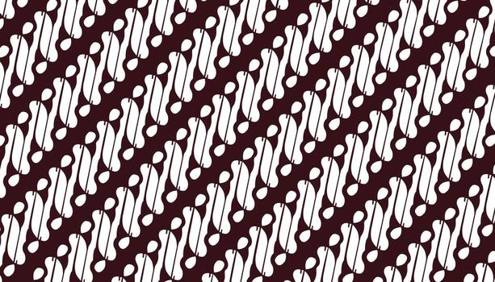
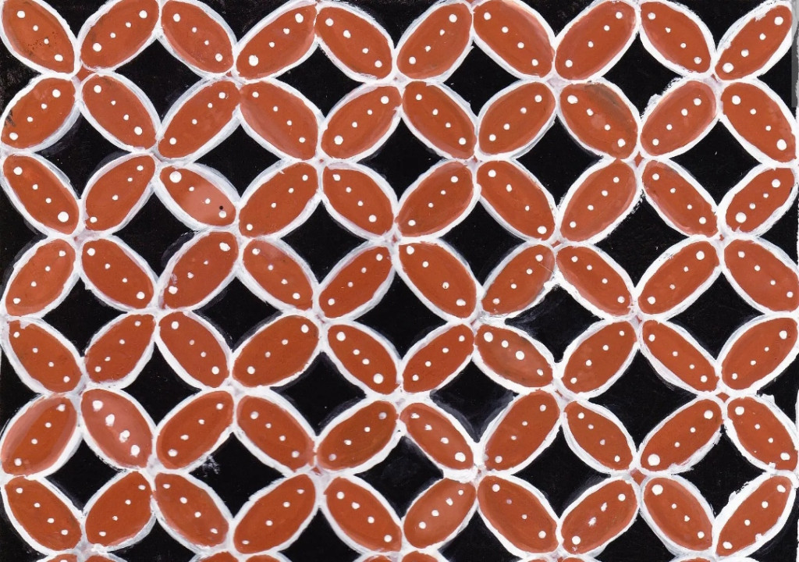

Identify Batik Motif
Upload or capture an image of a Batik cloth to discover its heritage, region of origin, and the symbolic meaning woven into its pattern.
Input Image Source
Drop your image, browse file, or take a picture
Supports JPG, PNG, WEBP, or Live Camera up to 10MB
Analyzing textile patterns...
Analysis Result
Parang Rusak
Confidence Level: 98.5%
Popular Motifs

Batik Parang
Megamendung

Batik Kawung